|
Calculus - Vector Field Home : www.sharetechnote.com |
|
Let's assume that you are asked o create a mathematical model for the water flow shown below. How easy/difficult you think it would be ? It would be almost impossible to make a accurate model which can explain very detailed movement (flow) of the water.
But you can come out with big picture of the overall flow without much difficulty. Here comes one way. Let's suppose you are on a small boat on the water(Don't try riding a boat or even fishing in this kind of dangerous place -:). The boat will float along the water flowing under the boat. Now you can measure the direction and the speed of the boat at a point and you can draw an arrow (vector) representing the direction and the speed. (The direction of arrow head would represent the direction that the boat is moving and the size of arrow would represent the speed of the boat). You can repeat this kind of measurement on many different point (the best way would be to make a fine grid lines and perform the measurement and draw a vector at each grid point), you would get a lot of arrows (vectors). And then you would see the overall pattern of the water flow as shown below. This is the concept of vector field.
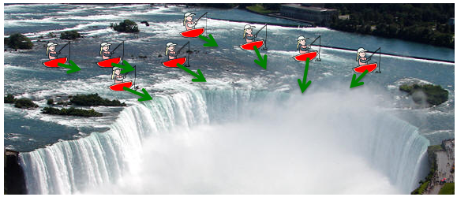
Vector field is a method to represent 'degree of changes' in arrows (vectors) at many points along a specified line, surface or volumn.
Now let's get into more mathematical context. In the above example, you 'felt' the flow with your body, now you are given a set of mathematical function as shown below. You see two functions P(x,y) and Q(x,y). Since this example is about the vectors on two dimensional plane, you have two variables x and y. P(x,y) is the function that gevern the vector component in x direction and Q(x,y) is the function that governs the vector component in y direction.
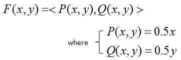
The way you draw a vector field is as follows. Pick any points in the coordinate. Plug the coordinate value into the function that represents the x component of a vector (P(x,y) in this example) and get the value, and draw a line on the x direction (green line in the following illustration). Next, Plug the coordinate value into the function that represents the y component of a vector (Q(x,y) in this example) and get the value, and draw a line on the y direction (red line in the following illustration). Following illustration shows this process for three different points. Make it sure that you understand this process very clearly and make some practice on your own. Otherwise, you would have difficulties interpreting the vector field.
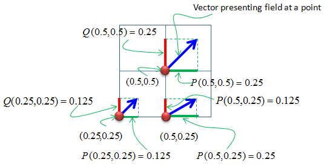
If you repeat the process explained above for all the points on the grid, you will get a lot of arrows as shown below. This is called a vector field.
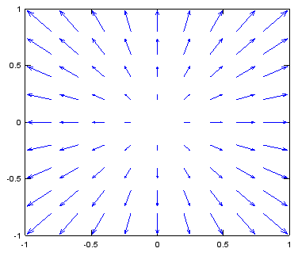
Examples of Vector Field
In this section, I will try to give you as many examples as possible so that you can make practise of plotting vector field. (I will keep adding the examples) For every example, try to draw a couple of arrows by yourself and imagine the final outcome in your mind first and then check if it is the same as the plot given here.
Following is the matlab code to draw all the plots in this section. Of course, you have to change the equation for dx, dy in the code. v = -1:0.2:1; [x,y] = meshgrid(v); dx=y; dy=-x - 0.25 .* y; quiver(x,y,dx,dy); axis([-1 1 -1 1]);
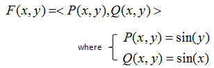
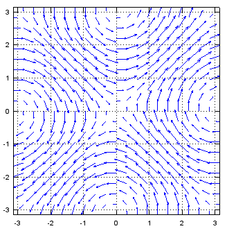
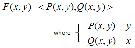
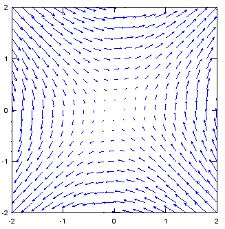
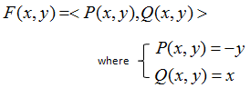
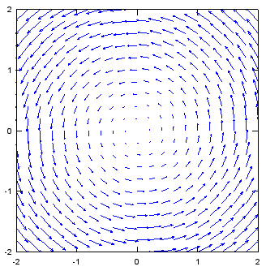
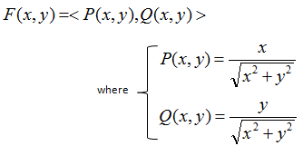
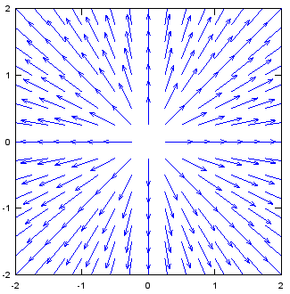
Applications of Vector Field
There is very important application of 'Vector Field'. You can get a solution to a differential equation without solving it if you use the vector field.
Let's see an example as shown below.
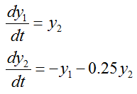
You can draw vector field from this set of differential equation by converting this equation into vector field format as shown below. As you see, just take the right hand side of differential equation and assign them to P(x,y) and Q(x,y) as shown below.
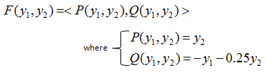
From the vector field plot for this equation, take any one point you want (This first point is the initial condition for the set of differential equation). Go to the end of the arrow (vector) and find another arrow which starts closest to it and then go to the end of the next arrow. If you repeat the process and draw a continous line you followed through, that becomes the solution of the different equation. (The red curve on the plot in the right hand is the path we can draw by this way).
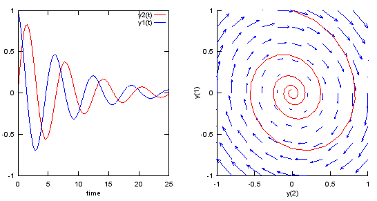
Following is the matlab/octave code that produce the plots shown above. You can try with various other differential equations with this code. Just modify the parts in blue.
v = -1:0.2:1; [y1,y2] = meshgrid(v); u1=y2; u2=-y1 - 0.25 .* y2;
dy_dt = @(t,y) [y(2);... -y(1) - 0.25 .* y(2)]; odeopt = odeset ("RelTol", 0.00001, "AbsTol", 0.00001,"InitialStep",0.5,"MaxStep",0.5); [t,y] = ode45(dy_dt,[0 25], [0.0 1.0],odeopt);
subplot(1,2,1);plot(t,y(:,1),'r-',t,y(:,2),'b-'); xlabel('time'); legend("y2(t)","y1(t)"); subplot(1,2,2); hold on; quiver(y1,y2,u1,u2); plot(y(:,1),y(:,2),'r-'); xlabel('y(2)');ylabel('y(1)'); axis([-1 1 -1 1]); hold off;
|